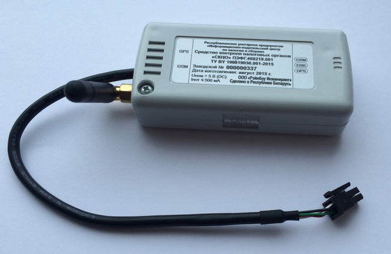

ЧТО ТАКОЕ СККО И СКНО?
- Согласно Постановлению Совета министров РБ и Национального банка РБ N924/16 от 06.07.2011 *** в республике начинает работать система контроля кассового оборудования (СККО), которая позволяет налоговым (контролирующим) органам в режиме онлайн получать информацию о выручке, регистрируемой на всех КСА и СКС. Всё кассовое оборудование должно быть подключено к данной системе.
- СКНО — это оборудование, устанавливаемое в специально предусмотренный отсек КСА, либо подключаемое снаружи к кассовому оборудованию, с помощью которого налоговые органы в режиме реального времени могут отслеживать данные о выручке, проводимой по кассовому оборудованию.
- Данные, вносимые в кассовое оборудование, попадают в СКНО и по GSM-сети передаются в центр обработки данных (ЦОД).
КОГДА И ГДЕ НУЖНО УСТАНОВИТЬ СКНО?
С 25.06.15 изменились сроки установки СКНО для юридических лиц и индивидуальных предпринимателей (Согласно Постановлению Совета министров РБ и Национальног банка РБ от 19.06.15 N516/15):
- для организаций и индивидуальных предпринимателей (ИП), реализующих товары в торговом объекте с торговой площадью 650 кв.м. и более, — 1 декабря 2016 года;
- для организаций, осущесвляющих оформление проезда и оказание услуг на железнодорожном транспорте общего пользования, — 1 октября 2017 года;
- для остальных организаций, осуществляющих продажу товаров (выполнения работ, оказание услуг)
- в городах областного подчинения и Минске — 1 апреля 2017 года
- в городах районного починения — 1 июля 2017 года
- на всей остальной территории республики — 1 октября 2017 года
Для остальных ИП, осуществляющих продажу товаров (выполнение работ, оказание услуг):
в городах областного подчинения и Минске — 1 февраля 2018 года,
в городах районного подчинения — 1 мая 2018 года,
на всей остальной территории республики — 1 августа 2018 года.
Более темным шрифтом обозначены даты до наступления которых владелец кассового оборудоввния
должен заключить договор с Республиканским унитарным предприятием «Иформационно-издательский
центр по налогам и сборам»(РУП «ИИЦНС»), находящимся по адресам:
● г.Минск, ул. Ф.Скорины, 8 (3-й этаж), тел.8(017)234-42-58, 8(025)600-24-66.
● г.Брест, ул.Московская, 275А, (кабинеты 304, 306, 307, 309, 310)
● г.Витебск, пр.Строителей, 11А, (кабинеты 402, 404)
● г.Гомель, ул.Советская, 24А, (2-ой этаж)
● г.Гродно, ул.Советская, 31, (2-ой этаж)
● г.Могилёв, ул.Космонавтов, 19А, (кабинет 205)
Для заключения договора при себе иметь копию договора с ЦТО, копию свидетельства о
регистрации,
банковские реквизиты, приказ о вступлении в должность директора (для организаций ) и печать (у
кого она есть) или генеральную доверенность.
В рамках заключенного договора владельцу кассового оборудования предоставляется 4 месяца для
модернизации имеющегося КО или его замены.
Перечень моделей кассового оборудования, имеющего (не имеющего) возможность работы с СКНО
представлен на сайте Госстандарта
http://www.gosstandart.gov.by/files/info-po-KO-v-chasti-podkluchenia-SKNO.pdf
При готовности КО к подключению,владелец повторно обращается в РУП»ИИЦНС» для оформления заявки
на подключение СКНО, при этом он оплачивает залоговую стоимость СКНО, абонентскую плату .
СКНО считается установленным с момента поступления в ЦОД СККО информации о работоспособности
установленного в кассовое оборудование СКНО.
Ослуживание СКНО производит РУП»ИИЦНС», регистрировать КСА с установленным СКНО в ИМНС не нужно.
Если СКНО неисправно, РУП»ИИЦНС» должен согласовать сроки устранения неисправности СКНО либо его
замены.
***Постановление Совета Министров РБ и Национального банка РБ N 924/16 от 06.07.2011года
http://www.pravo.by/document/?guid=3871&p0=C21100924